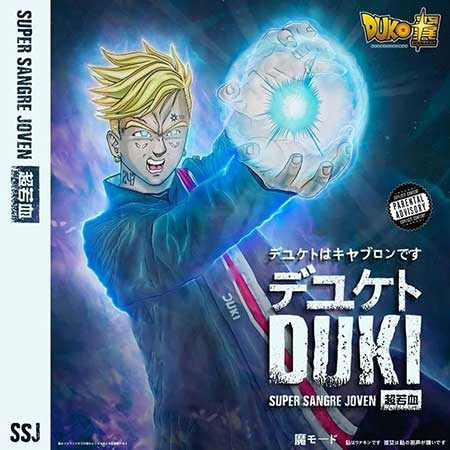
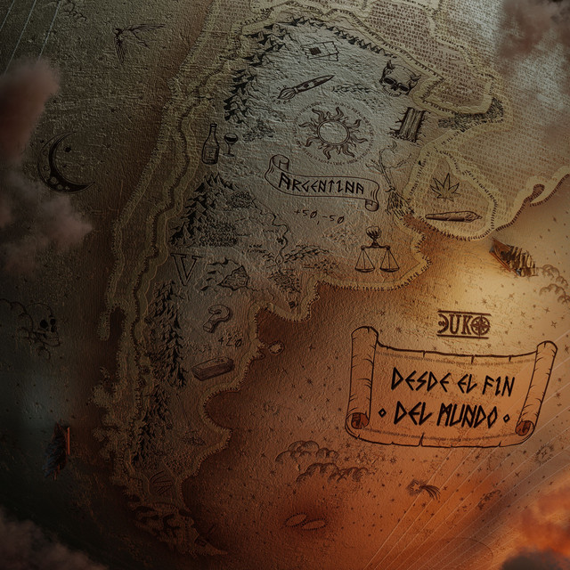
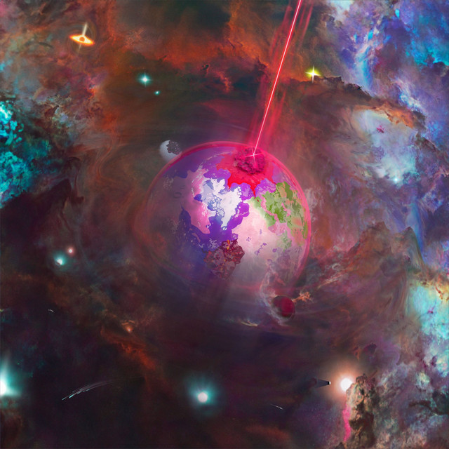
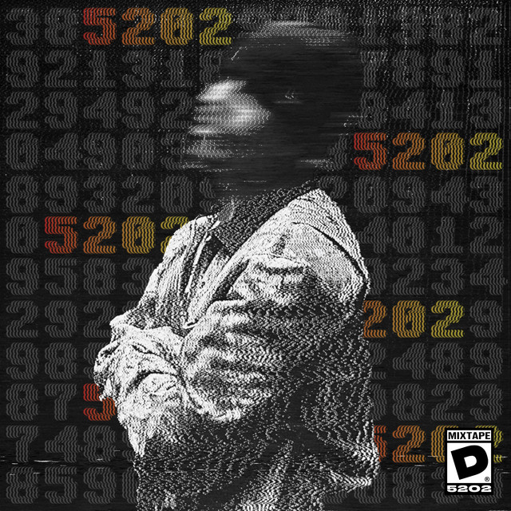
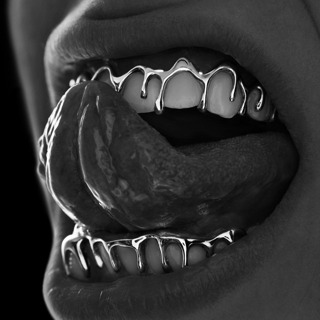
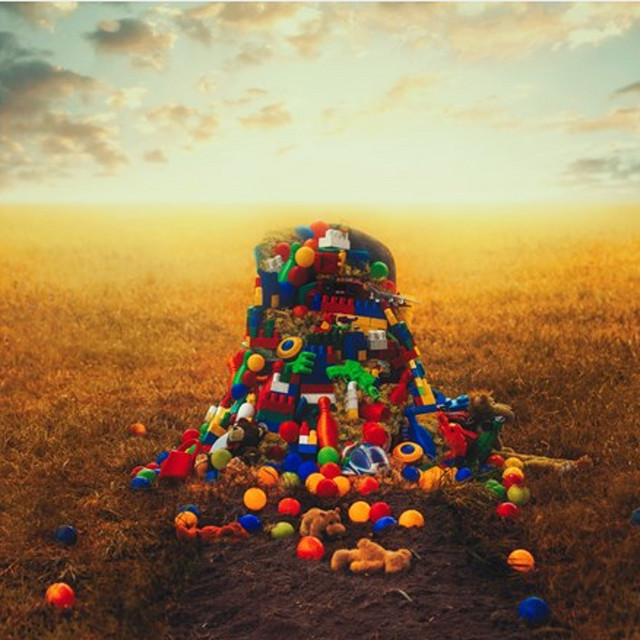
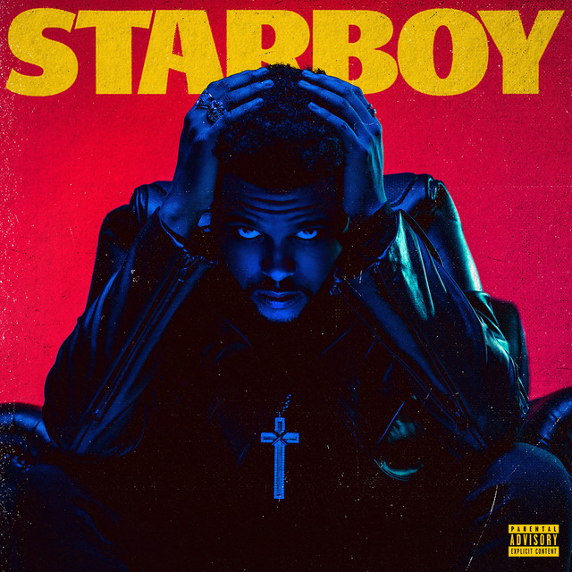

Mis Álbumes Favoritos

DUKI - Super Sangre Joven
Súper sangre joven es el álbum de estudio debut del rapero argentino Duki. Fue lanzado el 1 de noviembre de 2019 a través de Dale Play Records y SSJ Records. Cuenta con colaboraciones de artistas como YSY A, Khea, C. Tangana, Alemán y Eladio Carrión.
Escuchar en Spotify
DUKI - Desde El Fin Del Mundo
Desde el fin del mundo es el segundo álbum de estudio del rapero argentino Duki. Fue lanzado el 22 de abril de 2021 a través de los sellos independientes SSJ Records y Dale Play Records.
Escuchar en SpotifyDUKI - Temporada de Reggaetón
Temporada de Reggaetón es un proyecto del artista argentino Duki, lanzado el 25 de noviembre de 2021. En esta obra, Duki se aleja temporalmente del trap puro para explorar sonidos orientados al reggaetón y la música urbana bailable.
Escuchar en SpotifyDUKI - Temporada de Reggaetón 2
Temporada de Reggaetón 2 es la continuación de su proyecto anterior, lanzado el 23 de junio de 2022. Incluye grandes éxitos comerciales y marca el cierre de su etapa enfocada en este género antes de preparar su regreso al trap.
Escuchar en Spotify
DUKI - Antes de Ameri
Antes de Ameri es el tercer álbum de estudio de Duki, lanzado el 22 de junio de 2023. El disco marca su esperado regreso a las raíces del trap y sirve como un preludio conceptual y sonoro para su siguiente gran obra.
Escuchar en SpotifyDUKI - Ameri
Ameri es el cuarto álbum de estudio del rapero y compositor argentino Duki, lanzado mundialmente el 31 de octubre de 2024 a través de Dale Play Records y SSJ Records. El álbum rompió varios récords de ventas y streaming, a nivel regional y mundial.
Escuchar en Spotify
DUKI - 5202
5202 es el primer mixtape del rapero argentino Duki, lanzado el 7 de julio de 2025 bajo el sello discográfico Dale Play Records.
Escuchar en Spotify
WOS - Oscuro Extasis
Oscuro Éxtasis (2021) es el segundo disco de estudio del artista argentino WOS. El álbum funciona como un viaje emocional y sonoro que explora los miedos, las dudas, las sombras del éxito y la adrenalina. Mezcla rap clásico con rock alternativo, funk y nu-metal junto al productor Evlay.
Escuchar en SpotifyWOS - Descartable
Descartable (2024) es el tercer álbum de estudio del artista argentino Wos. Es un disco de 16 canciones con un sonido fuertemente arraigado en el rock nacional, producido junto a Evlay. La obra transita por la introspección personal, la melancolía y una aguda crítica al sistema.
Escuchar en Spotify
YSY A - Antezana 247
Antezana 247 es el álbum de estudio debut del rapero YSY A. Se lanzó el 11 de noviembre de 2018, fue distribuido por Faro Latino y contó con las colaboraciones de Duki, Neo Pistea, Obie Wanshot y Marcianos Crew.
Escuchar en Spotify
YSY A - Ysysmo
Ysysmo es el cuarto álbum de estudio del rapero YSY A. Se lanzó el 11 de noviembre de 2022 distribuido por ONErpm. El álbum fue lanzado completamente en solitario y con las producciones principalmente de Oniria y Baxian.
Escuchar en Spotify
The Weeknds - Starboy
Starboy es el título del tercer álbum de estudio del cantante y compositor canadiense The Weeknd. XO y Republic Records lanzaron el disco el 25 de noviembre de 2016. El álbum cuenta con varios artistas invitados como Daft Punk, Lana Del Rey, Future y Kendrick Lamar.
Escuchar en Spotify